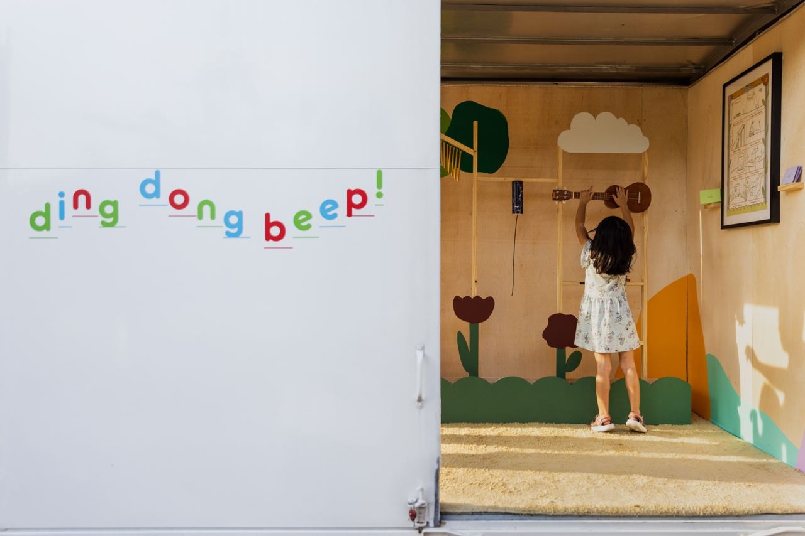
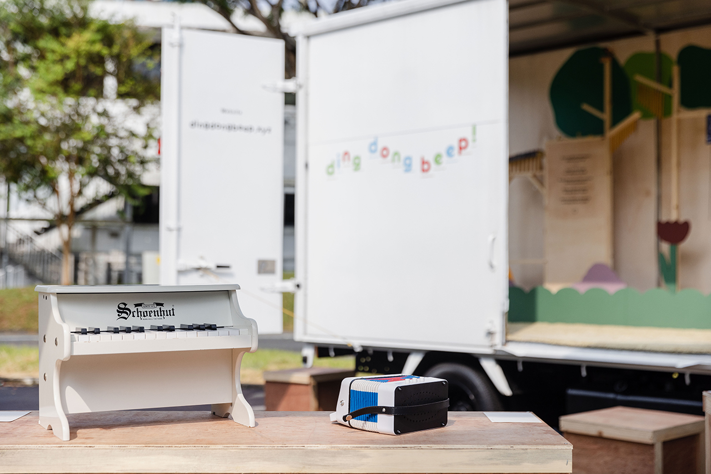

about
dingdongbeep! is a mobile music room with artworks and toy instruments you can look at and play with.
Inspired by the joy of discovery and exploration when encountering a new instrument, dingdongbeep! invites fresh encounters and stories when playing
with sounds. The project features works by Hong Shu-ying, Ng Fongyee and Pixie Tan.
Find us travelling around Singapore
from 8 – 26 Jan 2023

Play Video
notes on toy instruments
Toy instruments are made to be ‘looked at’ or ‘played with’.
They are usually simple-to-use and inexpensive musical instruments. They are capable of producing sounds, but the build quality or design might result in tonal variations and other “musical limitations”. They are almost like caricatures, close enough for the bits that matter. They are intuitive and inexpensive, with some quirks and flaws thrown in.
What are the possibilities of playing, listening and viewing these toy (and) instruments?
They are usually simple-to-use and inexpensive musical instruments. They are capable of producing sounds, but the build quality or design might result in tonal variations and other “musical limitations”. They are almost like caricatures, close enough for the bits that matter. They are intuitive and inexpensive, with some quirks and flaws thrown in.
What are the possibilities of playing, listening and viewing these toy (and) instruments?

Play Video
notes from the music room — playing (with) instruments
When I first joined the orchestra, we already knew how to play with our instruments before we learnt to play them. The dizi were swords and erhu cases were guns; everything was something to use for play pretend. The large instruments and cases were prime for hide and seek. And of course, swapping instruments with your friends to see who figured out how to play them first was also a game.
We found other ways to play when we got older and started to get our hands on spoilt and old instruments. These broken and whacky instruments were ours to take apart and try to fix. We tinkered and got to know how they made sounds. We messed around and got to know how they worked.
We were hooked on playing and I had two encounters with The Typewriter. The first time we had to play a concerto for a typewriter, we had to find instruments that sound like it. The second time we had to play a concerto for a typewriter, we had three to choose from. We had to listen to them and find one we can play like an instrument.
It didn’t stop there, we also messed with papers, abacuses, and other things from the everyday. Did you know that rustling papers sound like a forest when the wind blows? Did you know that shaking abacuses sound like footsteps and waves? Did you know that hitting metal sheets can sound like a thunderstorm?
I grew up playing with instruments while learning how to play them.
We found other ways to play when we got older and started to get our hands on spoilt and old instruments. These broken and whacky instruments were ours to take apart and try to fix. We tinkered and got to know how they made sounds. We messed around and got to know how they worked.
We were hooked on playing and I had two encounters with The Typewriter. The first time we had to play a concerto for a typewriter, we had to find instruments that sound like it. The second time we had to play a concerto for a typewriter, we had three to choose from. We had to listen to them and find one we can play like an instrument.
It didn’t stop there, we also messed with papers, abacuses, and other things from the everyday. Did you know that rustling papers sound like a forest when the wind blows? Did you know that shaking abacuses sound like footsteps and waves? Did you know that hitting metal sheets can sound like a thunderstorm?
I grew up playing with instruments while learning how to play them.
8 – 26 January 2023